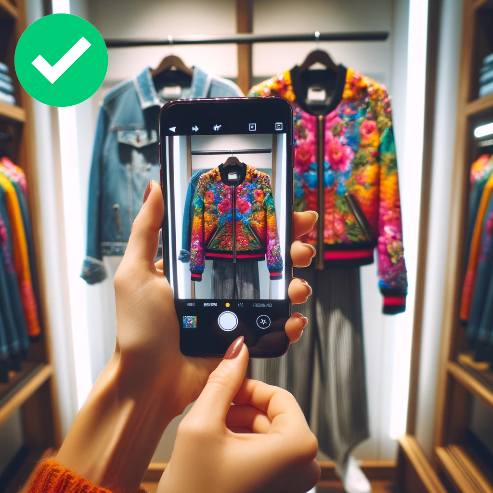
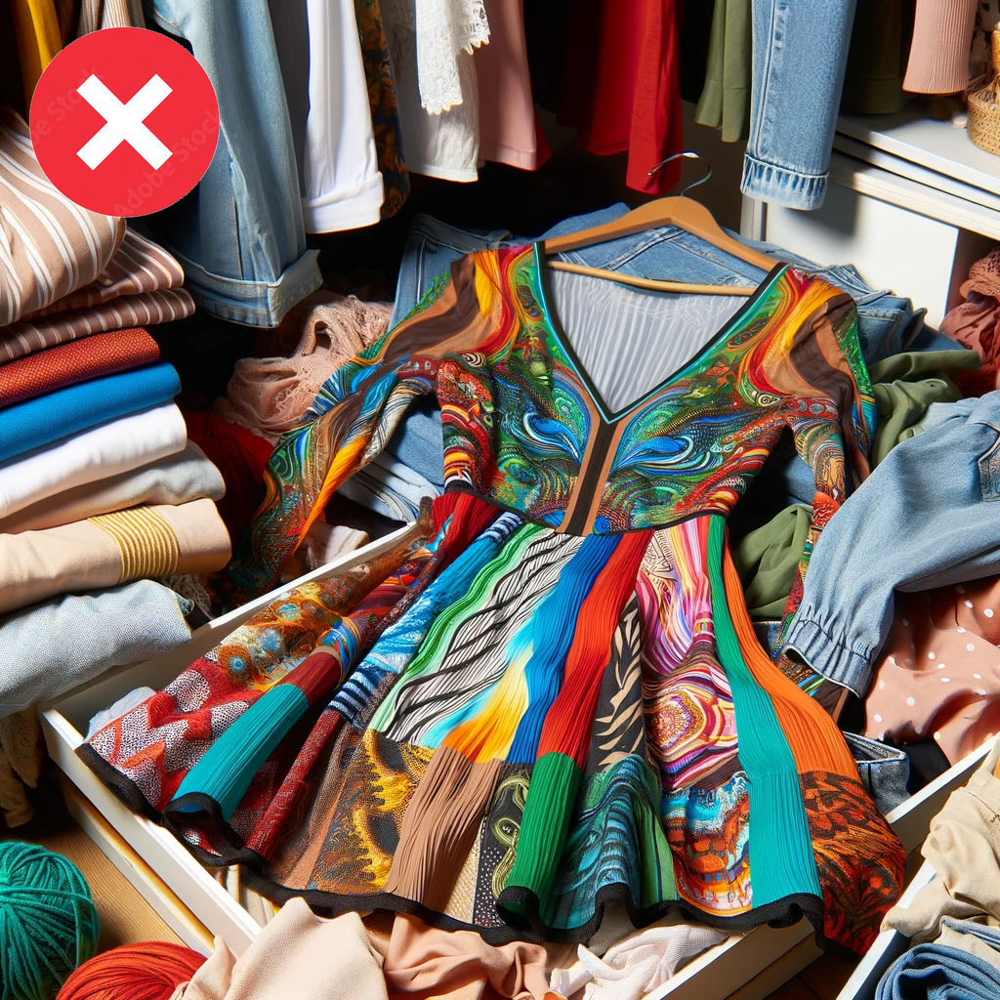
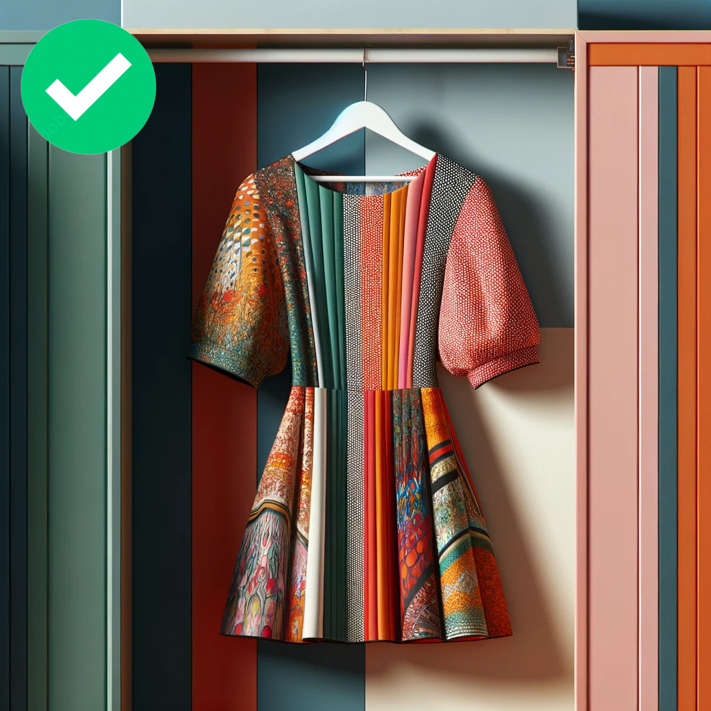
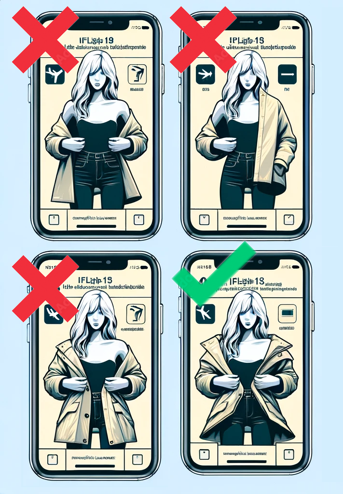
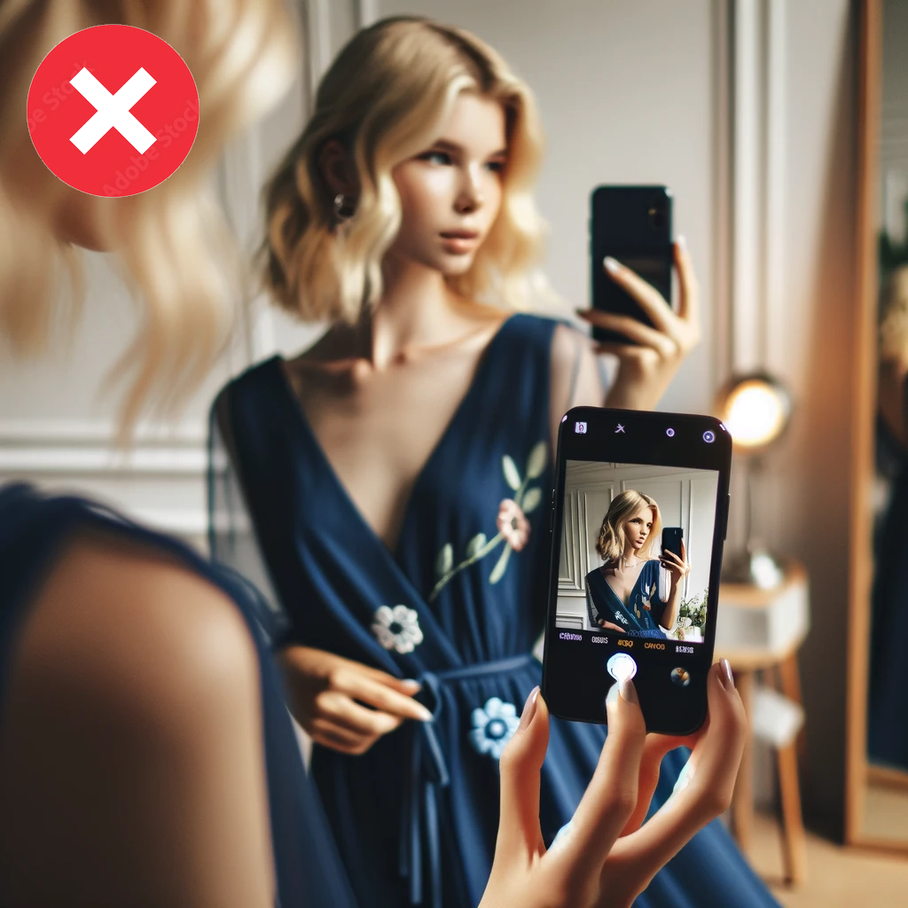

Вас приветствует StyleBot - ваш личный стилист, работающий на основе модели GPT4-Vision от OpenAI!
StyleBot специализируется на распознавании различных предметов одежды на ваших фотографиях и предлагает профессиональные советы по стилю.
Наша цель - помочь вам подобрать одежду в соответствии с вашим цветотипом, а также с учетом мероприятия, к которому вы готовитесь.
StyleBot также предложит аксессуары, которые удачно дополнят ваш образ.
Несмотря на то что StyleBot очень умный и учитывает более 200 параметров, вероятность ошибки составляет 5-10%. Часто ошибки возникают из-за качества фотографий, особенностей освещения и ракурса.
Это руководство призвано помочь вам делать лучшие фотографии для получения корректных результатов.
- Почему: естественный и яркий дневной или искусственный свет обеспечивают лучшие условия освещения для четких, детализированных фотографий.
- Как: фотографируйте возле окна или при хорошем белом искусственном свете.
- Почему: фон без посторонних предметов позволит боту сфокусироваться на конкретном предмете одежды.
- Как: уберите посторонние предметы из кадра, обеспечив чистый, простой фон.
- Почему: фото предмета целиком позволяет провести анализ его особенностей.
- Как: расположите предмет так, чтобы он занимал большую часть кадра, убедитесь, что он полностью виден.
- Почему: искажения могут изменить внешний вид предмета одежды и его деталей.
- Как: держите телефон максимально перпендикулярно предмету. Убедитесь, что изображение не искажено и не перекошено.
- На вешалке: повесьте предмет на фоне однотонной стены. Это особенно эффективно для предметов, которые сохраняют свою форму на вешалке.
- На себе: если предмет не сохраняет форму на вешалке (например, платья из тонкой ткани или костюмы), наденьте его и сделайте селфи в зеркале в полный рост. Убедитесь, что предмет одежды является основным объектом в кадре.
- Предмет одежды должен полностью помещаться в кадре.
- Избегайте наложения: не кладите предмет поверх другой одежды, так как это может скрыть его особенности.
Следуя этим рекомендациям, вы значительно сократите вероятность ошибок и улучшите способность StyleBot точно оценивать и предлагать стильные образы. Помните, чем лучше фотография, тем качественнее совет! Наслаждайтесь своим путешествием к самому модному образу со StyleBot.